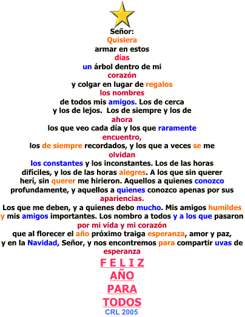
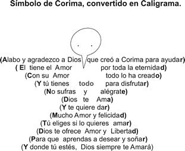

Composición poética, cuya disposición con palabras, adopta la forma de una imagen elegida. ¿Tu símbolo?
Elige una figura y coloca tu insignia o distintivo personal con un mensaje a tu gusto. ¡Suerte!



Hay muchas figuras y con un poco de cuidado lo logras con el teclado que está a tu disposición. Las palabras son mensajes que formarían lo que a ti te gusta más. Suerte es tu símbolo.